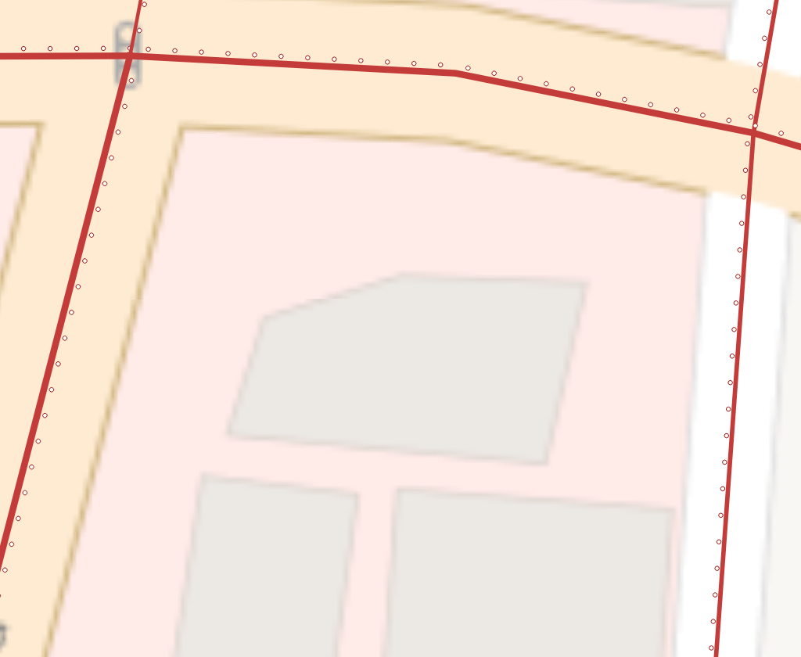
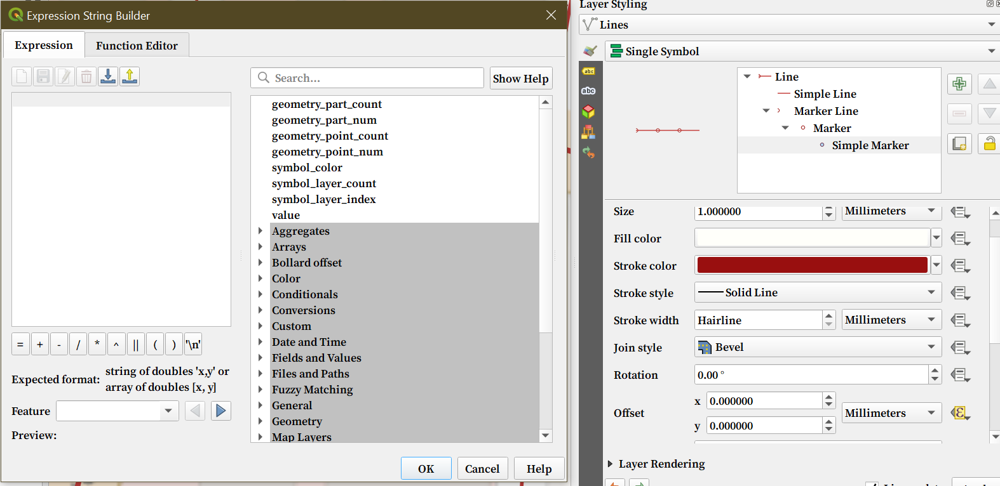
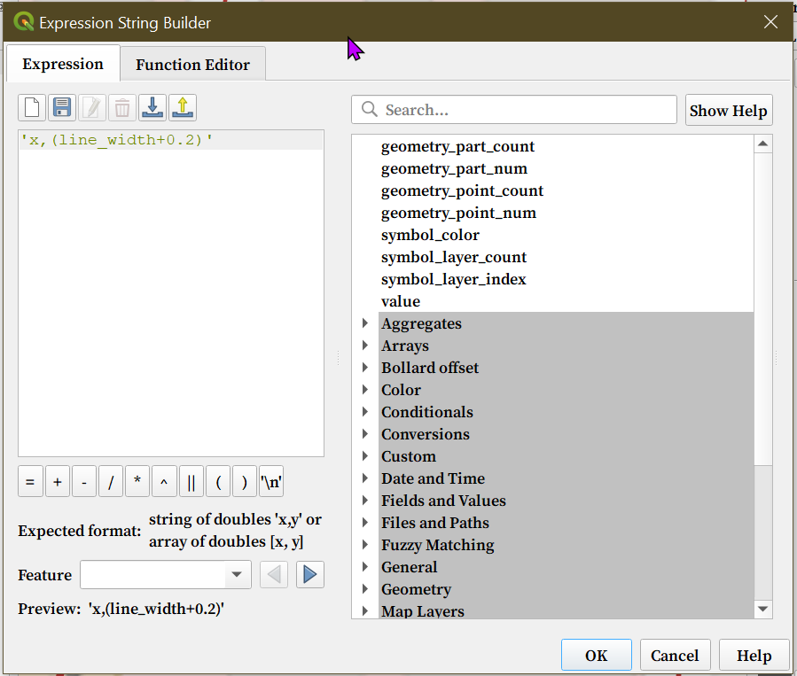
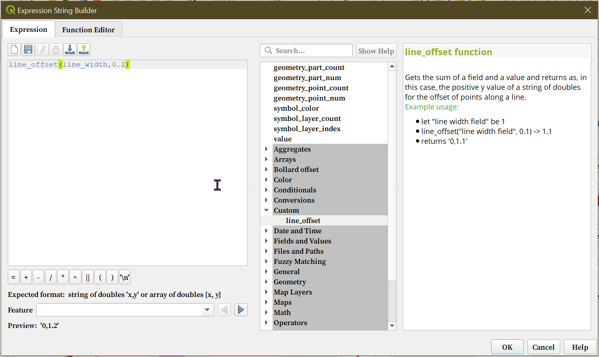

Let's say you have line that has a field-dependent width and you want to add a patern beside it. But you need the pattern's distance/offset from the line uniform among all line types.

Over the course of the project, you might try different distance/offset. A good way to do this is to use a use an expression that gets the width of the line, adds the distance you want, and returns it as a double.

As you may see in the Expression Builder window, the Offset option accepts a pair of numbers, separated by a comma, and as a string.
Since we're only interested in putting the pattern on the side of the line, x stays 0. The y value is the width of the line plus the desired distance.
You can try 'x,(line_width+0.2)' but it won't work because the y value needs to be an integer right away because the double is wrapped in a '' and is a string.
I've tried other variations of this expression until I figured I need to create a custom function that returns a double as a string that accepts a field and an integer as input for both the xy values.

Go to the Function Editor in the same window and create a new Python function:
from qgis.core import *
from qgis.gui import *
@qgsfunction(args='auto', group='Custom')
def line_offset(value1, value2, feature, parent):
"""
Gets the sum of a field and a value and returns as, in this case, the positive y value of a string of doubles for the offset of points along a line.
<h2>Example usage:</h2>
<ulgt;
<li> let "line width field" be 1</li>
<li>line_offset("line width field", 0.1) -> 1.1</li>
<li>returns '0,1.1'</li>
</ul>
"""
y_val= value1+value2
offset_val = '{x},{y}'.format(x=0, y=y_val)
return offset_val
Go back to the Expression builder and double-click the new function under the Custom tab. Note that this function only changes the y value
as shown in the offset_val = '{x},{y}'.format(x=0, y=y_val) line.
The function accepts two values and you can now use your layer's line width field and your desired offset/distance. In this case, it's called line_width.

Even if the width of the lines change, the pattern stays 0.2mm away from the lines. To change the offset, just change the second value in the expression
I hope this helps! 😊